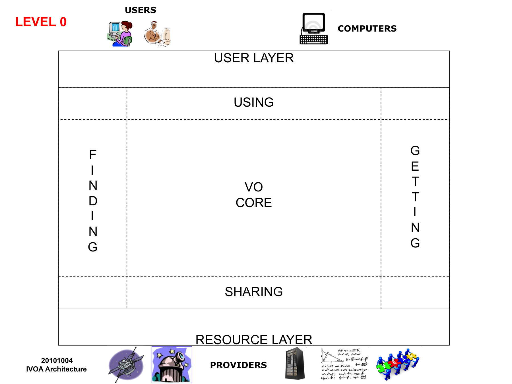

Introduction to VO Concepts
This is an introduction to the concepts underlying the VO from the deployer's point of view. For a more user-centred explanation, take a look at Using the VO. When you have read this overview, the next step is to take a look at the IVOA Architecture Document, which will lead you to the specific standards documents you need for your purposes, and then to look at the gradually evolving cookbook-style Guide to Publishing in the VO wiki page.
The VO ecosystem
The VO is not a concrete thing, like a data warehouse. Rather, it is more like an ecosystem of mutually compatible datasets, resources, services, and software tools which use a common set of technologies and a common set of standards. The idea is to make all these things inter-operable - i.e. to make them work nicely together. However, the VO is more than just a set of rules for everybody to follow; it also requires some specialised middleware to glue things together - for example Registry services, distributed storage, sign-on services and so on.
Standardisation
The key to making datasets, tools and services inter-operable is standardisation. The VO is built on top of Internet standards - especially HTTP and XML, and either SOAP/WSDL or REST for description of web services. Standards related to the Semantic Web - eg RDF and OWL - are also becomingly increasingly important. Furthermore, the way that standards are structured, debated, and approved is modelled on the methods of the World Wide Web Consortium (W3C). Draft standards are debated within technical working groups, overseen by a Technical Co-ordination Group. Each standard proceeds through "Working Draft", then "Proposed Recommendation" and finally "Recommendation". Standards are defined by a combination of text documents, XML schemas, and reference implementations. Many detailed standards are needed, but these fall into groups as explained below.
Resources and Services
The VO is based around the two key concepts of Resources and Services. The term "resource" can cover a wide variety of things - a web page, a database, a storage element, an interactive application, and so on - and is basically anything that is uniquely addressable through the Internet. For any kind of resource to be useful, it needs standard resource metadata that describes what it is, and furthermore the contents need to follow some kind of standard data model. Likewise the term "service" has quite a wide application, but it is basically anything that does something for you, implying a communication between two computers. For example a "data service" is a communication system that allows you to send queries to a database resource, and get back data in return. For a service to be useful, the way it works has to follow some standard protocol - such as the data access protocols described below - and it needs to publish service metadata that describe what it is, how it works, and what it provides.
The VO architecture
The IVOA Technical Co-ordination Group (TCG) maintains a document which gives an overview of the IVOA Architecture at three different levels, and shows diagramatically how the various standards fit into this architecture. We strongly recommend that potential deployers read this document carefully. (It will be updated more often than this web page). Here we provide a short summary, followed by a brief description of the key areas of standardisation.

At "Level 0" we can see the VO ecosystem as divided into the User Layer, the Resource Layer, and the VO Middle Layer, which connects the two transparently. Communication goes two ways, so we need to pay attention both to finding resources, and to getting stuff from the resources. VO standards also make it possible to communicate horizontally, between resource providers, and between user applications.

The "Level 1" diagram makes things a little more specific. "Finding" involves everything to do with Registries, the Yellow Pages of the VO, including how to name resources, how to list resource metadata, how to interface with a registry, and so on. "Getting" becomes the Data Access Protocols. In the "VO Core" we need to specify the various types of allowed data model, the semantics that should be followed, and how to construct a query in a standardised manner. Note that most of these details are not things users need to know about - rather, they are for service providers and applications writers.
The "Level 2" diagram places specific IVOA standards on top of the Architecture diagram to show how they fit in. Each of these standards has a related document, which you can find in the list of IVOA documents here. The specific standards document will also show the Architecture diagram, with more information about how the relevant standard fits in.
Key standardisation areas
Data Access
A suite of IVOA protocols specify basic access methods for different types of data resource - for example, Simple Image Access (SIA) for image archives, Simple Spectral Access (SSA) for spectra, Simple Cone Search (SCS) for source catalogues, and several others. These protocols are all “simple” because only a few parameters are involved in the data access requests - typically just RA, Dec, and search radius - and so implementing these services is relatively easy. For more flexible access, the IVOA provides Table Access Protocol (TAP). As well as giving a uniform way to issue SQL-like queries to large survey databases, it provides a richer way to find data from any data service. For example, rather than just looking for any images within a given radius of an RA and Dec, it could offer searching by observation date, camera filter, PI name, and so on. In principle, Structured Query Language (SQL) is already a standard for issuing queries to databases. In practice, there are vendor-dependant variants, and astronomy needs additional standardisation, such as how to specify searching within a circular region. The IVOA therefore produced a standard called "Astronomical Data Query Language (ADQL)", which can be expressed either in simple text strings, or in an XML format. Note that users don't necessarily need to learn this as a language - an application may allow a user to build a query with a graphical interface, or have its own scripting language, as long as the query is translated into standard ADQL. The receiving service likewise converts the standard ADQL into whatever its own database servers need. This is a good example of the VO philosophy : not to dictate what deployers do internally, but rather simply to make them commit to standard interfaces. VO data services normally return a standardised data format for tables, known as "VOTable". For a catalogue search, this might actually be the final desired data. For an image search, it is customarily a table including URLs of the images meeting the search criteria. The image data would not be transferred until specifically requested, with how this is done being dependent on the application. VO Tables are intended as an exchange medium, not as a primary storage format. Any FITS Table is expressible as a VO Table, but not necessarily vice versa, as the metadata in a VO Table can be structured hierarchically, as opposed to being a simple list of keyword-value pairs.
Resources and Registries
The two key standards are "Resource Identifier" which defines how to uniquely specify a resource, and "Resource Metadata" which lists the items necessary to describe a resource. Information about resources is collected in resource registries, which can then act as the yellow pages of the VO. Note that there is no unique centralised registry approved by some authority. In principle, anybody can set up a registry; but to do so, you need to do it in a standardised way. First, "VO Resource" specifies an XML encoding standard for recording the standard metadata for a resource entry. This is kept quite generic; there is then a series of "Registry Extension" standards which specify the extra information needed for specific types of resource - for example "VO Data Service", "Application Reg Ext" and so on. Next, "Registry Interface" describes the standardised way in which applications should communicate with registries. This follows a model in which there are two kinds of registries - searchable registries, which applications will query, and publishing registries, where resource providers place their information. There are standard methods for one registry to harvest from another - so the searchable registries can keep up to date, and so publishing registries don't need to be complete, or worry about having a search interface. If you want to know of all the Registries that exist, the IVOA maintains a "Registry of Registries".
Data Modelling and Semantics
A simple cone search service might allow a user to search for catalogue rows where the source RA and Dec is within a certain range, but the returned data will typically contain many other columns with many strange names. To make sense of these the user would need to separately consult the documentation on the providers web page. But if the returned data follows some standard structure, and uses standard ways of specifying what kind of quantity is in a column, a lot more can be done automatically by a good application. Working towards this ideal, the IVOA is developing a suite of standard data models, such as "Phot DM" for photometry data, "Obs core DM" for databases describing collections of observational data, "VO Event" for describing transient events such as supernovae and gamma-ray bursts, and so on. These make use of standard "Utypes" which specify how to define the elements of a data model, the "STC" standard which specifies how to refer to Space and Time Co-ordinates, and "Units" for specifying the units of a quantity as a simple string. There is also a controlled vocabulary known as "Universal Content Descriptors (UCDs)". For example, a column with the name "ALPHA" could be anything, but if it has the associated UCD "POS.EQ.RA" then you know it is a Right Ascension, in the equatorial system. There could be several columns in a table with the same UCD however - for example, the RA of the source, and the RA of the detector frame it was found on. To specify which is which you need a full data model. The UCD system is a fixed (but evolving) dictionary. A more general standard called "Vocabularies", which follows the W3C RDF and SKOS standards, allows for more flexible definition of vocabularies, and so will allow different groups to define and maintain their own vocabularies, but in a way that others can use.
Sharing: Distributed Computational Infrastructure
The VO is a distributed ecosystem, relying on a variety of services being able to interact with each other, in a mannner consistent with existing internet standards, and with evolving technologies in the web services and grid world. Therefore, as well as standards that describe astronomical resources and acccess protocols, we need highly technical standards to specify how services glue together. The key standard is "VO Support Interfaces (VOSI)", which describes what any web service needs to specify in order to play in the VO - a web-standard description based on WSDL or WADL; a list of capabilities offered, such as cone search, TAP etc; availability metadata; and if offered, a link to related table metadata. The related "Web Services Basic Profile" is a kind of guidebook for constructing web services that are compliant with both general web standards and specific IVOA standards. Likewise the "Universal Worker Service" is a pattern which describes how to set up asynchronous stateful services (i.e. ones which carry on even when the user is not connected), specifying a job in terms of Job Description Language (JDL), returning execution state when polled, and so on. This is particularly useful for running remote applications which can be specified in terms of a set of parameters, as opposed those which require ongoing interaction. Another aspect of a distributed infrastructure is the ability to share stored information through the "VO Space" standard. This could be to provide temporary user space, or to provide buffer space for services co-operating with each other behind the scenes, and so on. Just like with databases and ADQL, the VO philosophy is not to mandate any particular remote storage technology, for which there are lots of choices, but just to specify how to interface to such a remote storage system. A participating system has to have a unique address following the vos://aaa.bbb.ccc/xxx form, to provide methods to add and delete objects, manipulate object metadata, and to provide URIs through which the content of objects can be specified.
Sharing: Collaboration, Authentication etc
The initial stages of VO development relied on fully public data. However much of astronomy involves data with proprietary access, including such scenarios as "everybody in consortium X" or "only scientists from countries A and B" or "only A,B, and C until date X". This requires a standard definition of Identity, methods for authenticating whether a request comes from a specific Identity, and methods for authorizing use. The VO approach assumes the use of industry standard methods, such as public key encryption, Distinguished Name format, X509 certificates, Transport Layer Security (TLS) and so on. The "Single Sign On : Authentication Mechanisms" standard sets out approved ways to use these industry standards in the context of VO services. Ideally a user wants to sign on just once in a session, and have her credentials forwarded to relevant services as required (hence "single sign on"). The "Credential Delegation Protocol" standard specifies how to do this in a secure manner.
Sharing: Applications
Users may be accessing several different kinds of data - images, spectra, catalogues, times series etc - at the same time. Rather than mega-applications which do everything, it is more efficient if smaller applications specialise in particular jobs. However, it is then desirable for desktop applications to be able to share data and information in a standardised way. For example, the Topcat tables application may have downloaded and then manipulated a table including RA and Dec positions, which it can then send to an imaging application such as Aladin, to overplot on top of an image at the same central position on the sky. This is achieved through the "Simple Application Messaging Protocol (SAMP)" standard, which uses a hub and spokes method. Any SAMP-compatible application registers its presence on the Hub, and can route messages to any other currently present application. Any SAMP-compatible application can start a Hub if there isn't one already one running. There is a standardised list of message types, but each application has no obligation to check whether the data it wants to send makes any sense to the receiving application. However, given the limited range of data formats - FITS images, VO Tables, jpegs, etc - this simple method works very well.
What Standards do I want ?
Which standards you need to know about, and which you need to strictly adhere to, depends on who you are and what you are trying to do. For example, a data centre would want to build data services following SIA, SCS, TAP etc depending on the types of data they have, will sometimes want to know how to parse incoming ADQL queries, and will usually want to set up its own publishing registry. A research institution might want to deploy a full searchable registry, a VO Space implementation, and some sort of SSO for their users. An applications writer will need to understand how to query a registry, how to query one or more types of data service, how to understand the VOTables that come back, and how to speak to a SAMP hub. The Architecture Document, and the individual standards documents, give more detail about the dependencies of the standards on each other. The IVOA TCG are developing a wiki page which gives more detail on how publish to the VO, running through various examples. Some deployers will want to build their own services manually, having carefully read the standards documents. However, various teams around the world are developing toolkits aimed at making the construction of VO services semi-automated. You can find examples listed here.